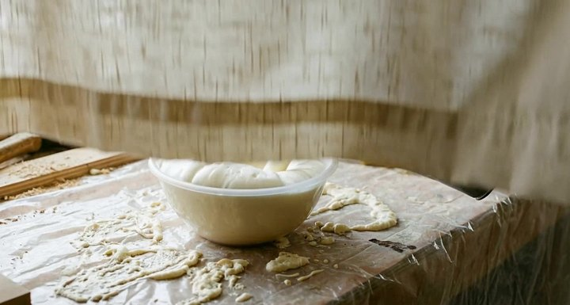
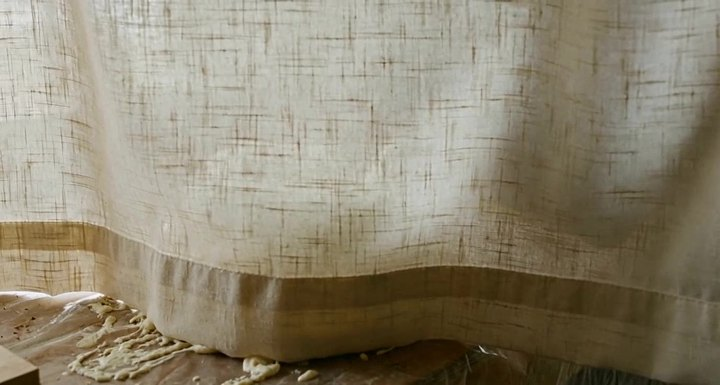
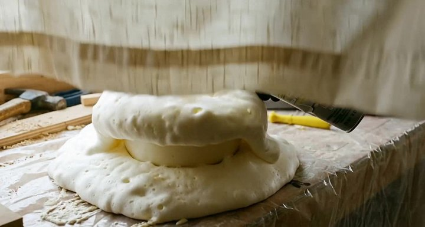
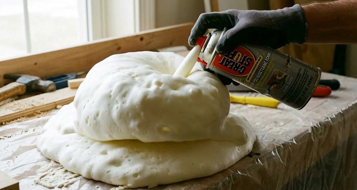
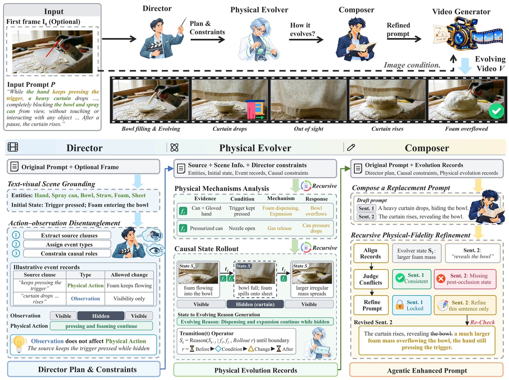
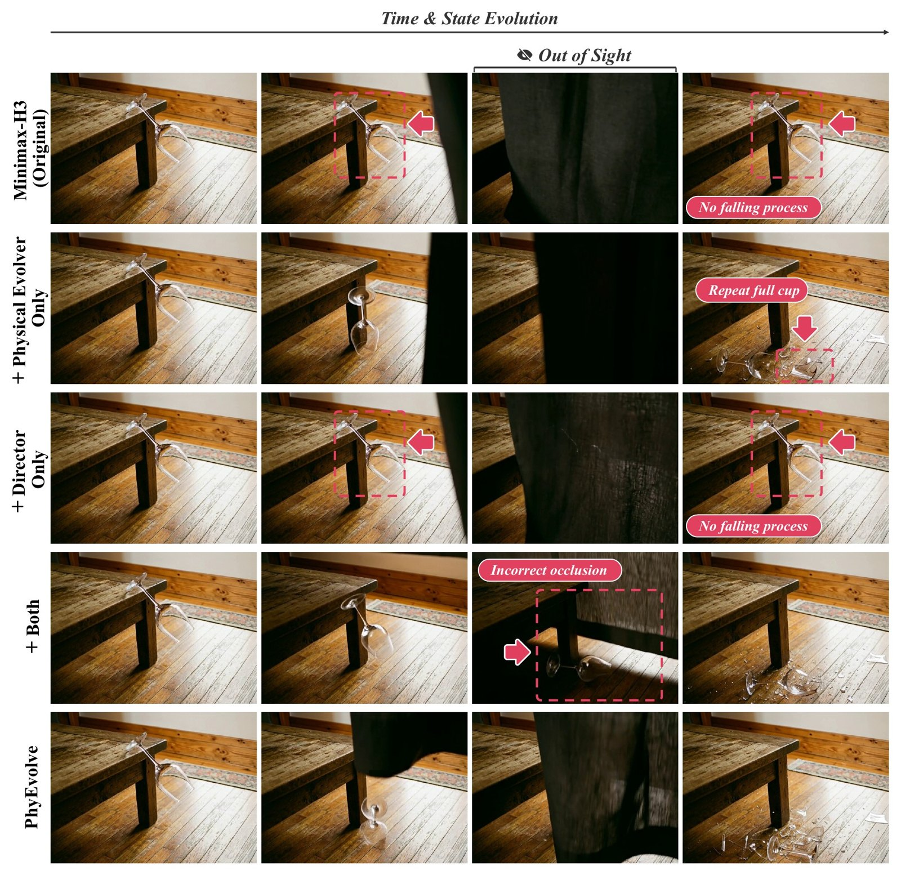

We formulate prompt enhancement for physics-aware video generation as semantic completion through structured state-evolution planning. In PhyEvolve, a Director disentangles physical events from observation changes, a Physical Evolver constructs causally linked state transitions that unfold whether visible or not, and a Composer expresses them in a replacement prompt. Without retraining or modifying the generator, PhyEvolve outperforms the strongest prior agentic baseline by 7.9 points on average across four benchmarks.
The curtain only changes what the camera sees. The foam keeps expanding while hidden, so when the curtain rises the scene must reveal the state it has reached — not restart.





Four methods in each row: Minimax-H3 (original prompt), NEWTON, Co-Director and PhyEvolve. Each row has its own shared playback controls.
Two events per row. Each pair compares Minimax-H3 on the original prompt with PhyEvolve. Events are distinct from the comparisons above.
NEWTON, Co-Director and PhyEvolve all run on the same frozen Minimax-H3 generator; PhyEvolve only replaces the prompt. All scores are percentages, higher is better, and the best value in each column is bold.
| Method | Type | StEvo-Bench Evo. Success ↑ | PhyGenBench Average ↑ | PhyWorldBench Overall Both ↑ | VideoPhy-2 All Joint ↑ | Average ↑ |
|---|---|---|---|---|---|---|
| Open-source video generators | ||||||
| Wan2.2-TI2V-5B | Video generator | 0.9 | 66.7 | 15.0 | 24.9 | 26.9 |
| LTX-Video-2.5 | Video generator | 0.9 | 64.6 | 16.5 | 22.2 | 26.1 |
| Minimax-H3 | Video generator | 17.7 | 63.5 | 66.6 | 23.9 | 42.9 |
| H3-based systems | ||||||
| NEWTON | Agentic framework | 29.0 | 77.5 | 69.9 | 23.2 | 49.9 |
| Co-Director | Agentic framework | 20.0 | 75.4 | 65.8 | 24.9 | 46.5 |
| PhyEvolve | Agentic framework | 45.7 | 79.6 | 75.8 | 30.1 | 57.8 |
| Model | Evo. Success ↑ | Prog. ↑ | Phys. ↑ | Coh. ↑ | Obs. Ctrl. ↑ | Act. Ctrl. ↑ |
|---|---|---|---|---|---|---|
| Open-source video generators | ||||||
| Wan2.2-TI2V-5B | 0.9 | 10.9 | 51.6 | 62.4 | 45.7 | 54.3 |
| LTX-Video-2.5 | 0.9 | 14.0 | 66.5 | 95.0 | 55.9 | 56.8 |
| Minimax-H3 | 17.7 | 25.3 | 70.6 | 88.2 | 87.6 | 81.5 |
| H3-based agentic frameworks | ||||||
| NEWTON | 29.0 | 36.8 | 93.4 | 93.2 | 89.3 | 80.7 |
| Co-Director | 20.0 | 42.0 | 72.0 | 94.0 | 83.7 | 83.3 |
| PhyEvolve | 45.7 | 51.2 | 96.8 | 94.6 | 89.5 | 85.2 |
| Model | Mechanics ↑ | Optics ↑ | Thermal ↑ | Material ↑ | Average ↑ |
|---|---|---|---|---|---|
| Open-source video generators | |||||
| CogVideoX-2B | 38.0 | 43.0 | 34.0 | 39.0 | 39.0 |
| CogVideoX-5B | 39.0 | 55.0 | 40.0 | 42.0 | 45.0 |
| Open-Sora V1.2 | 43.0 | 50.0 | 44.0 | 37.0 | 44.0 |
| Lavie | 30.0 | 44.0 | 38.0 | 32.0 | 36.0 |
| Vchitect 2.0 | 41.0 | 56.0 | 44.0 | 37.0 | 45.0 |
| Wan2.2-TI2V-5B | 66.7 | 82.0 | 57.8 | 54.2 | 66.7 |
| LTX-Video-2.5 | 64.2 | 70.7 | 58.9 | 61.7 | 64.6 |
| Minimax-H3 | 59.2 | 78.0 | 57.8 | 54.2 | 63.5 |
| Closed-source video generators | |||||
| Pika | 35.0 | 56.0 | 43.0 | 39.0 | 44.0 |
| Gen-3 | 45.0 | 57.0 | 49.0 | 51.0 | 51.0 |
| Kling | 45.0 | 58.0 | 50.0 | 40.0 | 49.0 |
| H3-based agentic frameworks | |||||
| NEWTON | 70.0 | 89.3 | 76.7 | 70.8 | 77.5 |
| Co-Director | 69.2 | 80.7 | 76.7 | 74.2 | 75.4 |
| PhyEvolve | 73.3 | 84.7 | 82.2 | 77.5 | 79.6 |
| Model | Fundamental Physics ↑ | Composite Physics ↑ | Anti-Physics ↑ | Overall Performance ↑ |
|---|---|---|---|---|
| Closed-source video generators | ||||
| Sora-Turbo | 24.6 | 18.8 | 3.9 | 20.8 |
| Gen-3 | 16.1 | 10.3 | 2.0 | 13.0 |
| Kling-1.6 | 23.5 | 13.9 | 4.2 | 18.8 |
| Pika 2.0 | 31.2 | 23.9 | 1.1 | 26.2 |
| Luma | 22.0 | 16.0 | 0.0 | 18.4 |
| Open-source video generators | ||||
| Hunyuan 720p | 20.5 | 19.9 | 1.0 | 18.5 |
| Open-Sora 2.0 | 20.5 | 15.4 | 1.0 | 17.0 |
| Open-Sora-Plan 1.3 | 9.6 | 4.4 | 3.9 | 7.5 |
| CogVideoX-1.5 | 19.2 | 15.4 | 0.0 | 16.3 |
| Step-video-T2V | 18.9 | 19.1 | 2.0 | 17.3 |
| Wanx-2.1 | 22.0 | 18.7 | 1.1 | 18.9 |
| LTX-Video | 8.0 | 4.2 | 0.0 | 6.2 |
| Wan2.2-TI2V-5B | 17.9 | 14.0 | 1.0 | 15.0 |
| LTX-Video-2.5 | 19.4 | 15.9 | 1.0 | 16.5 |
| Minimax-H3 | 70.2 | 65.9 | 47.6 | 66.6 |
| H3-based agentic frameworks | ||||
| NEWTON | 73.5 | 70.1 | 47.6 | 69.9 |
| Co-Director | 69.4 | 69.8 | 33.7 | 65.8 |
| PhyEvolve | 79.2 | 76.1 | 54.3 | 75.8 |
| Method | All | Hard | ||||
|---|---|---|---|---|---|---|
| PC ↑ | SA ↑ | Joint ↑ | PC ↑ | SA ↑ | Joint ↑ | |
| Open-source video generators | ||||||
| Cosmos-Predict2.5 | 58.6 | 28.3 | 22.7 | 46.1 | 12.2 | 7.8 |
| HunyuanVideo | 73.6 | 25.3 | 22.5 | 63.3 | 8.9 | 6.7 |
| CogVideoX-5B | 69.2 | 30.2 | 25.9 | 54.4 | 9.4 | 5.0 |
| LTX-Video-2.5 | 54.7 | 28.8 | 22.2 | 40.7 | 8.9 | 3.9 |
| LTX-Video-2B | 74.3 | 22.9 | 21.4 | 63.3 | 6.7 | 4.4 |
| Wan2.2-TI2V-5B | 56.7 | 29.6 | 24.9 | 37.8 | 10.6 | 7.2 |
| Minimax-H3 | 69.5 | 29.8 | 23.9 | 62.2 | 7.2 | 4.4 |
| H3-based agentic frameworks | ||||||
| NEWTON | 72.5 | 29.0 | 23.2 | 71.5 | 7.8 | 6.7 |
| Co-Director | 55.8 | 30.1 | 24.9 | 38.3 | 10.0 | 5.0 |
| PhyEvolve | 83.9 | 34.5 | 30.1 | 84.4 | 14.4 | 12.8 |
| Variant | Evo. Success ↑ | Prog. ↑ | Phys. ↑ | Coh. ↑ | Obs. Ctrl. ↑ | Act. Ctrl. ↑ |
|---|---|---|---|---|---|---|
| Baseline (original prompt) | 17.7 | 25.3 | 70.6 | 88.2 | 87.6 | 81.5 |
| w/o Director | 45.3 | 51.2 | 93.7 | 94.6 | 82.4 | 82.4 |
| w/o Physical Evolver | 29.0 | 38.0 | 72.3 | 94.5 | 88.4 | 78.6 |
| w/o Composer | 44.3 | 51.5 | 93.7 | 94.6 | 89.3 | 84.9 |
| PhyEvolve | 45.7 | 51.2 | 96.8 | 94.6 | 89.5 | 85.2 |

| Agent backbone | Mechanics ↑ | Optics ↑ | Thermal ↑ | Material ↑ | Average ↑ |
|---|---|---|---|---|---|
| InternVL3.5-30B | 71.7 | 87.3 | 76.7 | 70.8 | 77.3 |
| Qwen3.5-9B | 67.5 | 84.0 | 81.1 | 75.8 | 77.3 |
| Qwen3-VL-32B | 73.3 | 84.7 | 82.2 | 77.5 | 79.6 |
| Benchmark | vs. Minimax-H3 | vs. NEWTON | ||
|---|---|---|---|---|
| Video | Physics | Video | Physics | |
| StEvo-Bench | 81.0 | 81.0 | 83.8 | 83.8 |
| PhyGenBench | 90.6 | 89.4 | 81.3 | 82.5 |
| PhyWorldBench | 60.6 | 66.9 | 69.4 | 70.6 |
| VideoPhy-2 | 66.3 | 63.8 | 66.9 | 61.9 |
| Overall | 74.6 | 75.3 | 75.4 | 74.7 |
| Method | LLM calls ↓ | Tokens (k) ↓ | End-to-end (s) ↓ |
|---|---|---|---|
| NEWTON | 7.8 | 54.3 | 1826.5 |
| Co-Director | 8.0 | 20.2 | 1009.6 |
| PhyEvolve | 6.1 | 17.0 | 452.5 |
@article{zhou2026phyevolve,
title = {PhyEvolve: Multi-Agent State-Evolution Planning for Physics-Aware Video Generation},
author = {Zhou, Yang-Hao and Tan, Lixing and Li, Zhiqi and Yang, Guang and Yang, Xiao},
journal = {arXiv preprint arXiv:XXXX.XXXXX},
year = {2026}
}